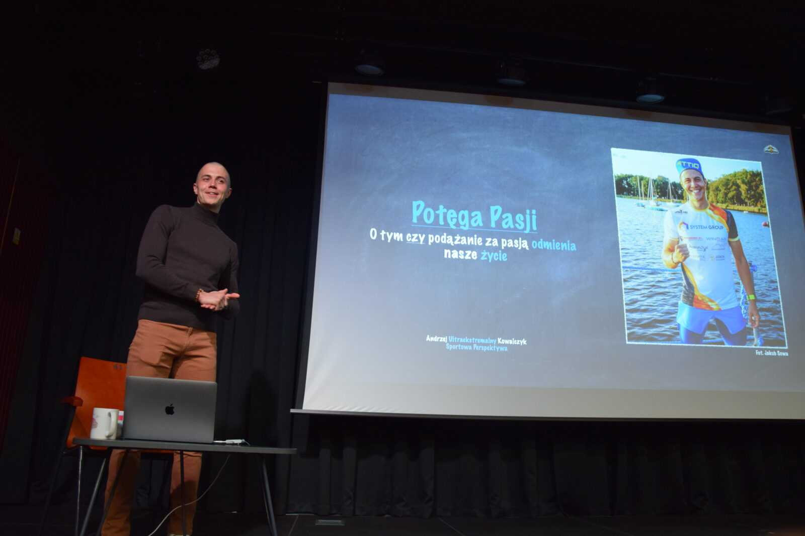
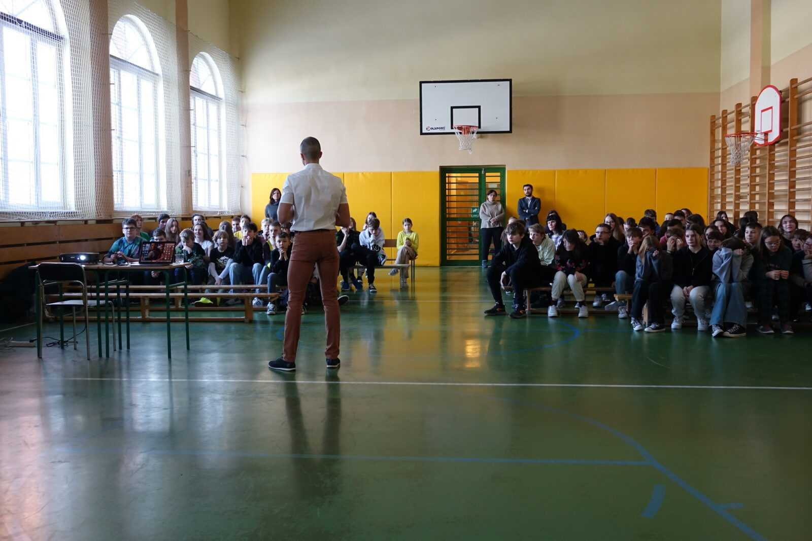
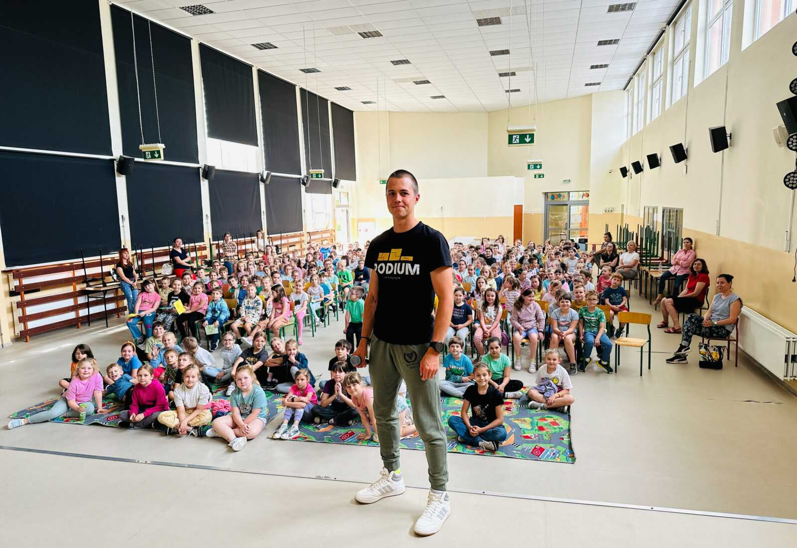
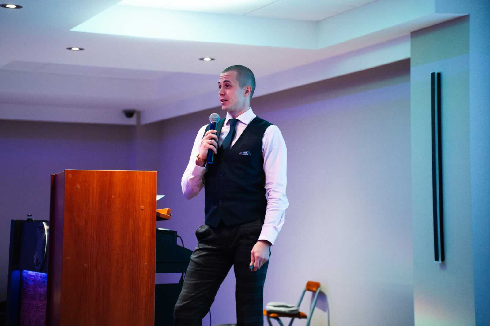
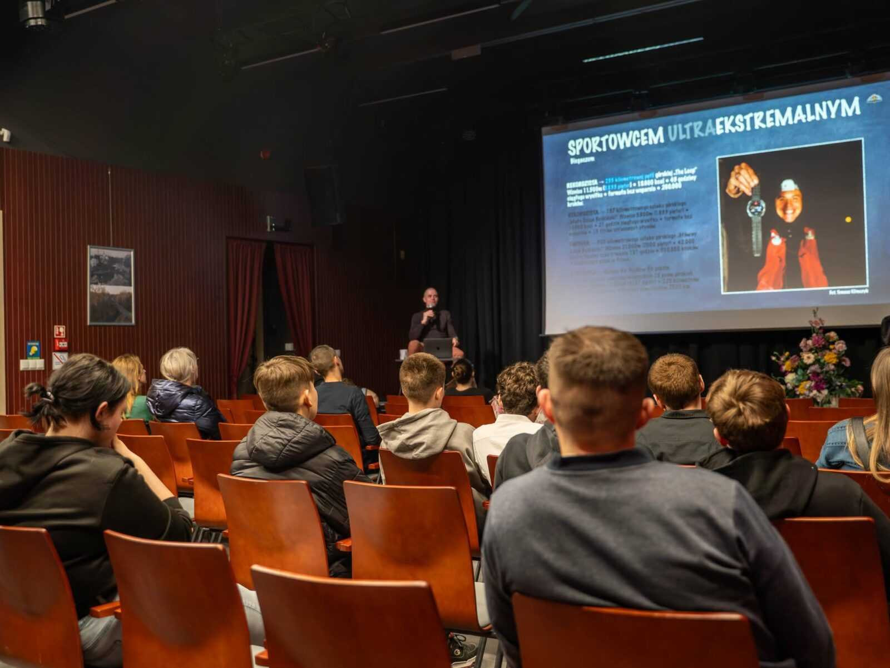

Prelekcje i szkolenia
Najpiękniejsze uczucie to bycie wartością dla innych.
Opowiadam o drodze od uzależnień do sportu zawodowego i uczę, jak łączyć ambitne życie z dbałością o zdrowie. W szkołach, firmach, na festiwalach i wszędzie tam, gdzie mogę być wartością dla odbiorców.
Prelekcja motywacyjna
Potęga Pasji
Od autodestrukcji metodą uzależnień do sportu zawodowego.
Czy niezależnie od wieku, liczby upadków i podejmowanych już prób, na przekór rachunkowi prawdopodobieństwa, pasja może całkowicie odmienić nasze życie? I czy może odmienić życie osób, które spotykamy na swojej drodze? Prelekcja to czas osobistego świadectwa, podczas którego odpowiadam na te pytania.
- Jak to jest pływać w wodzie o temperaturze poniżej 5 °C?
- Co dzieje się z ciałem i umysłem po 87 godzinach ciągłego biegu po górach?
- Jakie myśli krążą po głowie w trakcie 24-godzinnego pływania?
- Jak to jest podwoić dystans najcięższego triathlonu, robiąc to jako pierwszy?
Sport
Zaczynam od wyzwań: lodowatej wody, dni i nocy na górskich szlakach, doby w basenie i podwójnego triathlonu w Tatrach.
Zwrot
Po pierwszej części słuchacze spodziewają się opowieści o nienagannej drodze do sukcesu. Dostają przeciwstawne świadectwo: jak do 26. roku życia łamałem obietnice dane sobie i bliskim.
Przemiana
10.09.2017 zaczyna się moje drugie, trzeźwe życie. Opowiadam o drodze, która zaprowadziła mnie na sportowe i trzeźwe ścieżki, choć przez większość czasu była ich całkowitym zaprzeczeniem.
Wniosek
Niezależnie od tego, jak głęboko można zabłądzić, nigdy nie wolno w siebie zwątpić i przestać o siebie walczyć, nawet jeśli wszystkie statystyki stoją przeciwko nam.
Rozmowa
Po wszystkim jestem do dyspozycji uczestników podczas sesji pytań i odpowiedzi.
„Ówczesna słabość stanowi dzisiejszą siłę.”
Dla kogo
Z racji poruszanych tematów substancji i uzależnień spotkanie jest przeznaczone dla osób powyżej 12. roku życia. Szczególnie wartościowe jest dla młodego pokolenia, jako profilaktyka przed sięganiem po substancje uzależniające, ale też dla wszystkich, którzy są zakładnikami uzależnień, prokrastynacji albo poczucia braku chęci i sensu.
Mówię z autorską prezentacją w tle. W zależności od potrzeb pokazuję też film z jednego z wyzwań, na przykład „2 Hard Road 2 Walk Alone” albo „The Loop”.
Oferta prelekcji (PDF)





Szkolenie dla firm
Dźwignia aktywności i odżywiania
Jak poprawić kondycję zespołu w Twojej firmie? Uczę, jak poznać, zrozumieć i nauczyć się zarządzać czynnikami odpowiedzialnymi za zdrowie, sylwetkę i samopoczucie. To esencja dziesięciu lat mojej praktyki i edukacji.
65%
dorosłych Polaków ma nadwagę lub otyłość. Co trzecia osoba w Polsce nie uprawia żadnej aktywności fizycznej.
Pięć nierozerwalnych narzędzi
Poprawa higieny snu: więcej energii, siły, witalności i gotowości na kolejny dzień.
Zwiększanie spontanicznej aktywności fizycznej i indywidualny dobór ruchu. Uczę szacować i zwiększać wydatki energetyczne, czyli zarządzać dźwignią bezpośrednio odpowiedzialną za masę ciała.
Obliczanie zapotrzebowania energetycznego, komponowanie posiłków pod względem odżywczym i energetycznym oraz posiłki szybkie, smaczne, odżywcze, elastyczne i mobilne. Do tego protokół punktów kontrolnych zdrowego tempa redukcji.
Odpowiednie nawodnienie w pracy i podczas wysiłku, najprostsze narzędzie lepszego samopoczucia.
Suplementacja celowana, uzupełniająca realne niedobory, a do tego skuteczne metody regeneracji stosowane między innymi przez najlepszych sportowców.
Przebieg spotkania
- PrelekcjaAutorska prezentacja zrozumiała dla każdego, niezależnie od wyjściowej wiedzy, wzbogacona o przypadki podopiecznych, z którymi pracowałem.
- Pytania i odpowiedziWasze pytania, moje odpowiedzi.
- Analiza składu ciałaDla chętnych, na wadze Tanita MC-580s: poziom tkanki tłuszczowej i mięśniowej, nawodnienia, minerałów kostnych oraz wiek metaboliczny.
- WarsztatyWyliczamy zapotrzebowanie energetyczne każdej osoby i dobieramy współczynnik aktywności, żeby na tej podstawie ustalić strategię notowania postępów.
- Miejsce
- Siedziba Twojej firmy albo inne zapewnione miejsce
- Sala
- Przestrzeń szkoleniowa z rzutnikiem
- Grupa
- Do 20 osób
- Czas
- 3–4 godziny, zależnie od liczby osób i zaangażowania zespołu
- Cena
- 2900 zł netto na terenie Śląska, faktura VAT. Poza województwem mogą dojść koszty dojazdu, ustalane indywidualnie
145 zł
netto na osobę przy 20 uczestnikach. Jednorazowa konsultacja w gabinecie dietetycznym to koszt kilkuset złotych, a szkolenie firma może ująć w kosztach.
„Na krótkim spotkaniu w gabinecie otrzymasz kilka kierunkowych porad i wyjdziesz z rybą, a nie wędką.”
Zajęcia w grupie sprawiają, że po spotkaniu możecie wzajemnie pomagać sobie w interpretacji wiedzy i postępów. To także integracja zespołu.
Oferta szkolenia (PDF)Referencje
Listy z miejsc, w których byłem.
23listy referencyjne i podziękowania z lat 2024–2026
Byłem między innymi
Szkoły
- Tychy: SP 11, Sportowa SP 19, SP 24, SP 36, ZS nr 5
- Zabrze: SP 25, ZS Mechaniczno-Samochodowych
- Drzewica: ZS Powiatowych
- Gmina Kleczew: SP Kleczew, Sławoszewek, Złotków, Budzisław Kościelny, ZSOiT
Festiwale i kultura
- NASH Festival, Szklarska Poręba
- Festiwal Górski Adrenalinium, Żywiec
- Łaziski Festiwal Górski „Pod górę”
- Muzeum Historyczne Skierniewic
- Muzeum Miejskie w Tychach
Biznes
- Centrum Biznesowe Atrion, Tychy
- Spotkanie tyskich pośredników nieruchomości
Wspólnoty i sport
- MGOPS Kleczew
- Dom Pomocy Społecznej, Kędzierzyn-Koźle
- Rekolekcje „Jezus żyje!”, Góra św. Anny
- KS AZS-AWF Poznań
- UKS FA Sosnowiec
Logistyka
Pytania
Ile trwa spotkanie?
Prelekcję dopasowuję do formatu wydarzenia: od lekcji w szkole, przez wystąpienie festiwalowe, po pokaz filmu ze spotkaniem. Szkolenie dla firm trwa 3–4 godziny, zależnie od liczby osób i zaangażowania zespołu.
Dla kogo jest prelekcja?
Dla osób powyżej 12. roku życia, bo mówię o substancjach i uzależnieniach. Występowałem w szkołach podstawowych i średnich, na festiwalach, w firmach, ośrodkach pomocy, na rekolekcjach i w klubach sportowych. Z dziećmi w wieku 6–11 lat rozmawiałem o porażkach i dążeniu do celu.
Skąd dojeżdżasz?
Z Tychów. Docieram wszędzie, gdzie mogę być wartością dla odbiorców. Ostatnio między innymi do Kleczewa, Szklarskiej Poręby, Skierniewic, Poznania, Żywca i Kędzierzyna-Koźla.
Ile to kosztuje?
Honorarium za prelekcję ustalam indywidualnie. Zależy od charakteru spotkania (na przykład wydarzenie komercyjne albo wizyta w szkole), miejscowości i ewentualnych kosztów delegacji, takich jak nocleg czy wyżywienie. Szkolenie dla firm kosztuje 2900 zł netto na terenie Śląska.
Czy prowadzisz spotkania nieodpłatnie?
Tak. Prelekcje dla miejsc, grup i osób, które w ramach wolontariatu społecznego działają na rzecz potrzebujących wsparcia, prowadzę nieodpłatnie. Odpowiadam też na zaproszenia szkół, fundacji, stowarzyszeń i ośrodków, które chciałyby, żebym podzielił się swoją historią z ich podopiecznymi.
Czego potrzebujesz na miejscu?
Projektora z wejściem HDMI i, w zależności od sali, nagłośnienia: mikrofonu i głośników. Na szkolenie wystarczy sala z rzutnikiem.
Czy można połączyć spotkanie z filmem?
Tak. Pokazuję filmy z wyzwań, na przykład „2 Hard Road 2 Walk Alone”, który zdobył Nagrodę Główną 16. Przeglądu Filmów Górskich w Wadowicach, albo „The Loop” o 235 kilometrach samotnego biegu po Beskidach.
Porozmawiajmy o tym, co możemy zrobić razem.
Szukasz partnera dla swojej marki lub prelegenta na wydarzenie? Napisz kilka słów o swoim pomyśle. Dopasujemy formę współpracy do Twoich potrzeb.